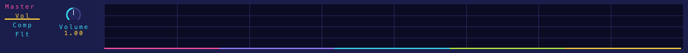
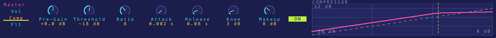
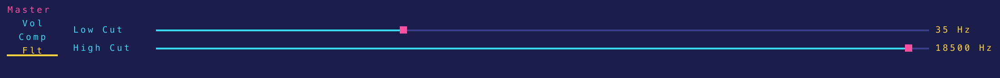

orDrumbox User Manual
Native desktop version (Windows ordrumbox.exe, also runs on macOS) — version 0.1
Contents
- Getting started
- The window
- Knobs, sliders and lists
- Menu bar
- Header (toolbar)
- Status line and action log
- Pattern grid
- Track editor
- Note editor
- Piano roll
- Song panel
- Synth editor
- Kit editor
- Output panel
- Generation, styles and auto mode
- Files: save, import, export
- Keyboard shortcuts
- Audio signal flow
- AI clients (MCP)
- Updates, About, factory reset
1. Getting started
Installing
Download the release zip (ordrumbox-v<version>-windows-x64.zip) and unpack it.
It holds ordrumbox.exe and an assets folder; keep them side by side.
The assets folder holds the demo library, the kits and their samples, the scales, the
synth presets and the generation styles. No installer is needed.
First steps
- Start
ordrumbox.exe. The demo library opens on its first pattern. - Press Space (or click PLAY) to start and stop playback.
- Click an empty step of the grid to add a note; click a note to select it; click the selected note to delete it.
- Click a track's name to select the track: the track editor on the right shows its settings.
- Pick a STYLE in the header, or press B, to make the pattern again in a style.
- Press F1 at any time for the list of keys.
Where your work is kept
Everything is saved automatically: the library one second after each edit and on quit. There is no "unsaved changes" state. The files are in the user data folder:
| System | User data folder |
|---|---|
| Windows | %APPDATA%\orDrumbox |
| macOS | ~/Library/Application Support/orDrumbox |
| Linux / other | ~/.local/share/ordrumbox |
| File | Holds |
|---|---|
library.json | Patterns and arrangements (the song) being edited. |
kits.json | The kits and their sample settings, as edited in the kit editor. |
samples/ | Audio of added, replaced or normalized samples (32-bit float WAV). |
synth_presets.json | The synth presets, as edited in the synth editor. |
settings.json | The master bus, the colour scheme, the update check. |
songs/ | Songs saved with File › Save song (.odbox). |
mcp.json | The port and token of the AI client link. |
To start again from the demo, use Help › Factory reset... (see section 20).
2. The window

The window always keeps the same parts, whatever is being edited:
┌──────────────────────────────────────────────────────────────┐ │ Menu bar: File Edit View Pattern Generate Play Song Kit Help │ ├──────────────────────────────────────────────────────────────┤ │ Header: PLAY BPM PATTERN BEATS KIT STYLE ↻ AUTO … VIEW │ │ Status line: last action · undo / redo · song │ ├─────────────────────────────────────────────┬────────────────┤ │ │ │ │ Main editor (one of): │ Track editor │ │ grid · piano roll · song · synth │ (F2) │ │ (or the kit editor over them) │ + note editor │ │ │ │ ├─────────────────────────────────────────────┴────────────────┤ │ Output panel: master Vol · Comp · Flt (always shown) │ └──────────────────────────────────────────────────────────────┘
| Part | How to show it |
|---|---|
| Grid (pattern editor) | F5, View › Grid, header GRID |
| Piano roll | F4, View › Piano roll, header ROLL |
| Song panel | F3, View › Song, Song › Song view, header SONG |
| Synth editor | F6, View › Synth, header SYNTH |
| Kit editor (over the main editor) | Ctrl+K, View › Kit editor, Kit › Kit editor, header KIT |
| Track editor (right edge) | F2 or View › Track editor shows or hides it |
| Output panel (bottom strip) | Always shown |
F3, F4 and F6 toggle: pressed again, they go back to the grid. In the song panel, piano roll and synth editor, Esc also goes back to the grid.
Colours
A deep ground with neon accents, one role each: pink for titles, the selection and slider handles; cyan for labels, sliders and knobs; lime for play, what is on and the playhead; yellow for values, the active tab and button. Each track has its own colour (pink, cyan, yellow, violet, orange, lime, then round again), used for its stripe in the grid, its notes, its notes in the piano roll and its clips in the song panel. C or View › Next colour scheme cycles through five schemes: Indigo, Amber, Deep sea, Crimson, Toxic. The choice is saved.
3. Knobs, sliders and lists
All editors use the same controls.
| Action | Knob | Slider |
|---|---|---|
| Drag | Up / down (200 px for the whole range) | Click or drag along it |
| Shift + drag | Fine adjustment | |
| Mouse wheel, arrow keys, - = | One step (Shift or Alt: a tenth of a step; Ctrl: ten steps) | |
| Double-click | Restore the default value | |
| Right-click, or Enter when focused | Type a number | |
- Lists open on a click (or Enter / Space): arrows to move, a letter to jump, the wheel to scroll, Enter to choose, Esc to close.
- Focus: Tab / Shift+Tab move the keyboard focus through the controls of the editors; Esc gives the keys back to the grid.
- LEDs (small on/off lights) switch an effect, an LFO or a mode on and off.
- While playing, a setting moved by an LFO shows the LFO's current value.
- A value outside its range is brought inside it, and the control shows the value actually used.
Confirmations
Everything that removes or replaces work asks first — Enter goes on, Esc or a click cancels: deleting a track, a clip, a song row, an arrangement, a kit's sample or a synth preset; clearing a track or a step holding several notes; random notes over a track's notes; compacting tracks; loading or importing a song; replacing an existing file on export. Deleting a single note happens at once (and can be undone).
Undo
Every edit is one undo step: Ctrl+Z undoes, Ctrl+Y (or Ctrl+Shift+Z) redoes, up to 50 steps. The Edit menu names the step it will undo or redo. Kit edits, synth preset edits and master settings are saved directly and are not undo steps.
4. Menu bar
The menu bar lists every command with its shortcut. Commands that cannot run are greyed out; on/off commands show a box (filled when on). Click a title, or press F10 or Alt alone, then use ← → between menus, ↑ ↓ between items, Enter to run, Esc to close. Commands ending in "..." ask for a name, a file or a folder.
File
| Command | Shortcut | What it does |
|---|---|---|
| Save | Save the library now (it is also saved on its own after each edit). | |
| Save song | Write the song (patterns, arrangements, selection) to songs/<name>.odbox in the user data folder. | |
| Save song as... | Write the song file to a folder you pick. | |
| Load song... | List the songs in songs/ and load one (replaces the library; one undo step; confirmed). | |
| Export song... | Write the .odbox song file to a folder you pick. | |
| Import song... | Read a .odbox file (replaces the library; one undo step; confirmed). | |
| Import MIDI file... | Ctrl+O | Turn a .mid file into new patterns (see Files). |
| Export pattern as JSON... | Ctrl+S | Write ordrumbox-<name>.json to a folder you pick. |
| Export pattern as MIDI... | Ctrl+M | Write the pattern as a type 1 MIDI file. |
| Export pattern as WAV... | Ctrl+E | Render the pattern once to a 16-bit 44.1 kHz WAV. |
| Export song as WAV... | Ctrl+Shift+E | Render the whole selected arrangement to WAV. |
| Add sample... | Add a WAV file to the current kit. | |
| Replace sample... | Replace the kit editor's selected sample with a WAV file. | |
| Load kit mapping... | Load a kit from a .json mapping. | |
| Export kit mapping... | Write the current kit's mapping as .json. | |
| Quit | Ctrl+Q | Save and quit. |
Edit
| Command | Shortcut | What it does |
|---|---|---|
| Undo: <step> | Ctrl+Z | Undo the named step. |
| Redo: <step> | Ctrl+Y | Redo the named step. |
| Copy step | Ctrl+C | Copy the notes of the cursor step. |
| Copy track | Ctrl+Shift+C | Copy the focused track (settings and notes). |
| Paste | Ctrl+V | Paste the copied step at the cursor. |
| Paste track | Ctrl+Shift+V | Paste the copied track into the pattern. |
| Clear step | Delete | Remove the notes of the cursor step. |
| Deselect | Esc | Drop the selection and the cursor. |
View
| Command | Shortcut | What it does |
|---|---|---|
| Track editor | F2 | Show / hide the track editor on the right. |
| Grid | F5 | The pattern grid as main editor. |
| Piano roll | F4 | The piano roll as main editor. |
| Song | F3 | The song panel as main editor. |
| Synth | F6 | The synth editor as main editor. |
| Kit editor | Ctrl+K | Open / close the kit editor. |
| VU meters | V | Level meters on the track stripes of the grid. |
| Next colour scheme | C | Indigo → Amber → Deep sea → Crimson → Toxic. |
Pattern
| Command | Shortcut | What it does |
|---|---|---|
| New pattern | Ctrl+N | Add an empty pattern. |
| Duplicate pattern | Ctrl+D | Copy the current pattern. |
| Rename pattern... | Edit the pattern's name. | |
| Pattern description... | Edit the pattern's description. | |
| Previous / Next pattern | [ ] | Step through the library's patterns (also Page Up / Page Down). |
| Random pattern | F | Jump to a random pattern of the library. |
| Tempo -1 / +1 | - = | Change the tempo by 1 BPM (Shift: by 10). |
| Length -1 / +1 beat | Ctrl+- Ctrl+= | Pattern length, 1 to 16 beats. |
| Add track | Ctrl+T | Add a track (up to 64). |
| Remove track | Ctrl+Backspace | Remove the focused track (confirmed). |
| Next grid | Ctrl+G | Next steps-per-beat value for the focused track. |
| Loop one step shorter | Ctrl+L | Shorten the focused track's loop by one step. |
| Compact tracks | Shorten every track whose notes repeat to its shortest loop (loop length set, the notes past it removed; confirmed). |
Generate
| Command | Shortcut | What it does |
|---|---|---|
| Generate the pattern again | B | Make the pattern again in its style (same as header ↻). |
| New pattern in the style | Shift+B | Add a new pattern made in the chosen style. |
| Auto (every track) | Every track in auto mode, or out of it (same as header AUTO). | |
| Drums (auto) | D | Generate the drum lines in auto mode; again: off. |
| Bass (auto) | S | Generate the bass line in auto mode; again: off. |
| Chords (auto) | A | Generate the chord lines in auto mode; again: off. |
| Track in auto mode | Z | Toggle auto mode of the focused track. |
| Lock the track | Protect the focused track from the generation. | |
| Random notes on the track | X | Random notes on the focused track (confirmed if it has notes). |
The Generate menu also lists the learned styles with the patterns and measures they rest on (see section 15).
Play
| Command | Shortcut | What it does |
|---|---|---|
| Play pattern | Space | Play / stop the current pattern in a loop. |
| Play song | Shift+Space | Play the selected arrangement from the song cursor. |
| Mute track | 1–9 | Mute track 1–9 (menu: the focused track). |
| Solo track | Shift+1–9 | Solo track 1–9. |
| Hear track | Q–P | Play the sound of track 1–10 once. |
Song
| Command | Shortcut | What it does |
|---|---|---|
| Song view | F3 | Show / hide the song panel. |
| Play song | Shift+Space | Play the selected arrangement. |
| New arrangement... | Add an arrangement. | |
| Remove arrangement | Remove the selected arrangement (confirmed). | |
| Previous / Next arrangement | Shift+[ Shift+] | Select another arrangement. |
| Rename song... | Edit the song's name. | |
| Song description... | Edit the song's description. |
Kit
| Command | Shortcut | What it does |
|---|---|---|
| Previous / Next kit | , . | Select another kit. |
| Random kit | G | Select a random kit. |
| Auto-assign all tracks | J | Every track back on auto-assign (a sample of the kit by the track's name). |
| Use synth kit | H | Every track on the synth preset matching its name (KICK → KICK_SYNTH, SNARE → SNARE_SYNTH…; random when none matches). |
| Random samples on all tracks | K | A random sample, from any kit, on every track. |
| <kit names> | The kits; the current one is ticked. | |
| Kit editor | Ctrl+K | Open / close the kit editor. |
| Normalize kit | Bring every sample of the kit to 0 dB peak. | |
| Import folder as kit... | Make a new kit from a folder of WAV files. |
Help
| Command | Shortcut | What it does |
|---|---|---|
| Keyboard shortcuts | F1 | The list of every key. |
| About orDrumbox | The build and the folders in use. | |
| Check for updates | Ask now whether a newer release exists. | |
| Download orDrumbox <version>... | Open the page of the newer release (enabled when one was found). | |
| Factory reset... | Move your files aside and restart from the demo (confirmed). |
5. Header (toolbar)

Under the menu bar, after the logo, a row of labelled groups:
| Group | Control | What it does |
|---|---|---|
| PLAY / STOP | Button | Start / stop the pattern (lit while playing). |
| BPM | Knob, 20–250 | The pattern's tempo. |
| PATTERN | List | Pick a pattern. The label above it shows the grid page shown (Page n/m, 4 beats per page). |
| BEATS | List, 1–16 | The pattern's length in beats. |
| KIT | List | The kit the tracks draw their samples from. |
| STYLE | List | The 14 styles, the learned styles, or random. Picking one makes the pattern again in it. |
| ↻ | Button (B) | Make the pattern again in its style: its tracks, meter, tempo and lines. A track the style names keeps its sound and settings; the others go. Draws a new seed. |
| AUTO | Button | Every track of the pattern in auto mode, or out of it. |
| ENERGY | Knob, 0–100 (50 = unchanged) | Scales the hits and densities of all lines, ×0.5 to ×1.5. |
| COMPLEX | Knob, 0–100 (50 = unchanged) | Shifts the complexity and syncopation of every drum part, −100 to +100. |
| VARY | Knob, 0–100 (50 = unchanged) | Scales the variation of the lines and of the play, from none to twice. |
| VIEW | GRID ROLL SONG SYNTH KIT | The main editor shown (lit). KIT toggles the kit editor. |
The three knobs remake the lines at once from the pattern's seed: the same values always give the same lines.
6. Status line and action log
The line under the header shows the last action or message, what undo and redo would do, and the song position while a song plays. Errors (a file that cannot be read, a value that was refused) are shown there too. A click on the status line opens the action log: everything done since the app started, newest first. Scroll it with the wheel, the arrows, Page Up/Page Down, Home/End.
7. Pattern grid
The grid (F5) shows the pattern's tracks as rows of steps, 4 beats per page; the page follows the playhead while playing and the cursor otherwise.

A track row
- Colour stripe — the track's colour; with V, a VU meter.
- M / S boxes — mute / solo.
- Name — the instrument (KICK, SNARE, CHH…). Green when the track is in auto mode.
Under it, what it plays: its sample (
kit/file) or its synth preset (synth BASS5). - Volume slider — the track's volume.
- Steps — notes in the track's colour, brighter with velocity; a mark at each beat, the loop point at the track's loop length.
Mouse
| Action | Result |
|---|---|
| Click an empty step | Add a note. |
| Click a note | Select it (and hear it); the note editor shows it. |
| Click the selected note | Delete it. |
| Click a track's name | Select the track (and hear it); the track editor shows it. |
| Drag a track's name up or down | Move the track to another row (one undo step). |
| Hover a note | A bubble shows its pitch, MIDI number and the settings that differ from the defaults. |
| Click M / S | Mute / solo the track. |
Right-click menus
| On | Items |
|---|---|
| A track's name | Rename track, Copy track, Paste track (after a copy), Move up, Move down, Duplicate track, Delete track, Randomize, Clear notes |
| A step | Copy notes, Paste notes (after a copy), Delete notes (when there are notes), Add rnd note (a note at a random pitch) |
Keys
| Key | Action |
|---|---|
| Arrows | Move the grid cursor. |
| Enter | Like a click at the cursor: add, select, delete. |
| Shift+↑ ↓ | Velocity of the selected note ±0.05. |
| Shift+← → | Pitch of the selected note ±1 semitone. |
| Delete | Clear the cursor step. |
| Esc | Deselect. |
| Ctrl+C / Ctrl+V | Copy / paste the cursor step (Shift: the track). |
8. Track editor
Down the right edge (F2 shows or hides it). It edits the track of the cursor or of the selected note. From top to bottom: the sample bar, the knob bar, five tabs, then the note editor.

Sample bar
The sample's detected note, length, peak level and envelope with the decay end marked. Load replaces the track's sample with a WAV file.
Knob bar
| Knob | Range | What it does |
|---|---|---|
| Vol | 0–100 % | Track volume (LFO-capable). |
| Pan | −1 to +1 | Stereo position (LFO-capable). |
| Transp | −24 to +24 st | Transpose in semitones (LFO-capable). |
| Decay | 20–5000 ms (default 500) | The sample's decay: how long it sounds after the attack. |
FX tab
Four sub-tabs, Rev, Dly, Sat, Flt, each with an on/off LED. Touching a control of an effect that is off switches it on.
| Effect | Control | Values | Notes |
|---|---|---|---|
| Rev (reverb) | Mix | 0–1 | Wet amount. |
| Type | none, room, hall, plate, spring, gated | hall and plate have a pre-delay, spring a dispersion, gated a large room cut 250 ms after the hit. | |
| Dly (delay) | Mix | 0–1 | Wet amount. |
| Beats | 1/16, 1/8, 1/4, 1/2, 1, 2, 4 | Delay time in beats. Longer than 2 s at the tempo, it plays at the longest halving that fits (shown on the choice). | |
| Fdbk | 0–0.95 (default 0.4) | How many repeats. Not used by slap. | |
| Type | none, slap, tape, pingpong | slap: one clean echo; tape: darker repeats with wow; pingpong: starts left, then alternates. | |
| Sat (saturation) | Mix | 0–1 | Drive amount. |
| Type | soft, hard, tape | soft: tanh; hard: clip; tape: asymmetric, even harmonics. | |
| Flt (filter) | Type | LP, HP, BP, NT (lowpass, highpass, bandpass, notch) | LED off = bypass. Switched on from its 20 Hz default, the cutoff goes to 1 kHz. |
| Slope | 12 dB, 24 dB | Per octave. | |
| Freq | 20 Hz – 20 kHz | Cutoff (LFO-capable). | |
| Q | 0.707–18.707 | Resonance (LFO-capable). |
Sound tab
| Control | What it does |
|---|---|
| Mono | A new note cuts the previous one. |
| auto (LED) | Auto-assign: the track takes a sample of the selected kit by its name, else of another kit, else a catalog substitute, else any sample (a random pick among the candidates, made at play and on a kit change). |
| Instr | The instrument (KICK, SNARE, CHH, BASS…). |
| Sample | A specific sample file. |
| Synth | A synth preset instead of a sample (edit it in the synth editor). |
LFO tab
One LFO per setting. Choose the setting with Target; its LED switches that LFO on or off.
| Control | Values | What it does |
|---|---|---|
| Target | Cutoff, Q, Vol, Pan, Transp | The setting the LFO moves. |
| Type | sine, triangle, sawtooth, square, random | The waveform. |
| Freq | The rate, in cycles per 4 beats. | |
| Range | min – max of the target | The span the LFO sweeps. |
| Phase | 0–1 | Start offset within the cycle. |
Loop tab
| Control | Range | What it does |
|---|---|---|
| Steps/Beat | 1–8 | The track's grid (Ctrl+G steps through it). Tracks may differ: 3 for triplets, 4 for sixteenths… |
| Loop Len | 1–128 steps | The track loops after this many steps (Ctrl+L: one shorter). Polyrhythms come from tracks of different lengths. |
| Swing | 0–1 | Delays the off-beat steps. |
Gen tab
How the generator treats this track (see section 15).

| Control | What it does |
|---|---|
| Auto | Auto mode: the track's line follows the song form as it plays (Z). |
| Lock | ↻, the header knobs and auto mode leave the track as it is. |
| New line ↻ | Make a new line for this track alone. |
| style / part | The pattern's style and the part this track plays in it (* = a value taken from the style). |
| Hits/Meas, Complexity, Variation | Drum track: how many hits per measure, how far from the strong steps, how much the line changes from loop to loop. |
| Variant, Density | Bass or chord track: the variant it plays (bass variants on a bass track, chord and melody ones on the others; empty = the style's) and its density (−1 to +1). |
A value ending in * is the style's; a double-click gives a value back to the style.
4→6 means the header knobs make it play 6.
Advanced ▸ unfolds more settings:
| Sub-tab | Shown | Settings |
|---|---|---|
| Manual | Auto mode off | Var Hits (0–100), Var Notes (0–100), Prob (0–1, the track's note probability) |
| Groove | Auto mode on | Var Hits, chances (0–100) of Pitch, Velocity, Silence, Fill, Ghost; Pitch Rng (1–24); Scale Lock |
| Engine | Auto mode on | Var Notes, chances of Retrig, Euclid, Note Prob and its Depth, Arp; Variant; Density |
| Compose | Drum track | Hits/Meas (0–32), Complexity, Syncopation (0–100), Coupling (−100 to +100, toward or away from the coupled part), Variation, Style (how much the style's weights count against the plain meter), Seed (0 = new each time; above 0 the same line every time) |
Var Hits and Var Notes are variation budgets: 100 gives 16 units per pattern; a velocity or pitch change costs 1, a silence, fill or ghost 3. The chances say how those units are spent. The header's VARY knob scales them.
9. Note editor
Under the track editor. It shows the selected note, else the step under the cursor, else the track's first note.
Knobs
| Knob | Range | What it does |
|---|---|---|
| Vel | 0–100 % | Velocity. |
| Pitch | −24 to +24 st | Semitones from the track's pitch. |
| Pan | −1 to +1 | The note's stereo position. |
Tabs
| Tab | Control | Range | What it does |
|---|---|---|---|
| Trig | Cycle | 1–16 | Play once every N loops. |
| Offset | 0–15 | Which loop of the cycle plays. | |
| Prob | 0–1 | Chance that the note plays. | |
| Retr | Retrig | 1–16 | Number of hits (rolls, flams). |
| Rate | 1–16 | Spacing of the retriggers. | |
| Prob | 0–1 | Chance of each extra hit (retriggers, euclidean fills, arpeggio notes). The first hit always plays. | |
| Eucl | Pulses | 0–16 | Evenly spaced extra hits between this note and the next. |
| Rot | 0–15 | Rotation of those pulses. | |
| Arp | Scale | the scales of scales.json | The scale the arpeggio climbs. |
| Dir | up, down, updown, random | The direction. | |
| Range | 0–12 | Number of arpeggio notes (0 = off). |
A cycled note plays when (loop + Offset) mod Cycle = 0.
10. Piano roll
F4. The track editor's track on a grid of steps (the list next to the title picks another track), 4 beats per page, pitches from MIDI 12 to 108 with a keyboard on the left. It opens on the track's pitch.

- Notes are drawn by velocity; a bar on top marks a probability (purple) or a cycle (blue).
- Retriggers, arpeggio steps and euclidean fills show as ghosts at their steps and pitches.
- While playing, the playhead moves (the page follows) and the sounding notes light up.
Mouse
| Action | Result |
|---|---|
| Click an empty cell | Add a note. |
| Click a note | Select it (and hear it). |
| Click the selected note | Delete it. |
| Drag a note | Up / down: velocity; sideways: pitch (a semitone every 12 px). The first movement chooses which; the value shows over the note; one undo step per drag. |
| Click a key | Hear that pitch. |
| Wheel | Scroll the pitches (Shift: the pages). |
| < > | Previous / next page. |
Right-click menus
| On | Items |
|---|---|
| A key | Clear all; Add sequence — the track replaced by a chord progression from that key, one chord per measure, a different progression each time (I-V-vi-IV, I-vi-IV-V…) |
| A cell | Add note or Delete note, Add minor chord, Add major chord |
Keys
| Key | Action |
|---|---|
| Arrows | Move the cursor (wrapping); the note there is selected. |
| Shift+↑ ↓ | Velocity of the selected note. |
| Shift+← → | Pitch of the selected note. |
| Enter | Add, select or delete at the cursor. |
| Delete | Delete the selected note. |
| Esc | Clear the selection, then back to the grid. |
11. Song panel
F3. A song is the library: its patterns and one or more arrangements. An arrangement places patterns as clips on a timeline of measures.

Layout
- Arrangement grid (top, full width): a ruler of measures; one row per pattern used, named on the left (a pattern gone from the library keeps its row, in red); each clip a bar over its measures, in the pattern's colour.
- Pattern list (bottom left): the library's patterns, and the selected pattern's description (click to edit).
- Song info (bottom right): the song's name and description (click to edit), its date, the arrangement list, and the buttons Save, Save as, Load, Export, Import, New, Delete.
Buttons
| Button | What it does |
|---|---|
| Save | Write songs/<name>.odbox in the user data folder. |
| Save as | Write the song file to a folder you pick. |
| Load | List the saved songs and load one (replaces the library, one undo step). |
| Export | Write the song file to a folder you pick. |
| Import | Read a .odbox file (replaces the library, one undo step). |
| New | Add an arrangement. |
| Delete | Remove the selected arrangement (confirmed). |
Mouse
| Action | Result |
|---|---|
| Click the ruler | Set the song cursor (where the song plays from). While playing, playback jumps there. |
| Click a pattern of the list | Select it. |
| Double-click a pattern | Add it at the playhead (stopped: at the cursor). |
| Drag a pattern along the list | Move it in the list. |
| Drag a pattern onto the arrangement | Add it at that measure, on its own row (a tooltip shows the measure). |
| Drag a clip sideways | Move it, whole measures at a time (the wheel scrolls during the drag; there is a page past the end to drop on). |
| Drag a row by its name | Move the row up or down (its pattern moves in the list too). |
| Wheel | Scroll the list, the description, or the measures (Shift: the rows). The scroll bars can be clicked or dragged. |
Right-click menus
| On | Items |
|---|---|
| A pattern of the list | Add at measure n (the playhead or cursor), Move up, Move down, Rename, Delete (with its clips; confirmed) |
| A row's name | Add at measure n, Move up, Move down, Delete row |
| A clip | Next (the same clip right after it), Delete |
| An empty cell | Add here (the row's pattern at that measure) |
Keys
| Key | Action |
|---|---|
| Space | Play / stop the song from the cursor. |
| ← → | Cursor one measure back / on. |
| ↑ ↓ | Previous / next pattern of the list. |
| Esc | Back to the grid. |
While the song plays, the grid follows it page by page. Each edit is an undo step and moves the song's loop to the end of the last clip.
12. Synth editor
F6. Edits the synth preset of the track editor's track (else the first preset). Every change plays
at once and is saved half a second later to synth_presets.json.

Preset bar
| Control | What it does |
|---|---|
| Preset list | Pick another preset. |
| x | Delete the preset (confirmed). |
| + | Create a new preset. |
| Dup | Duplicate the preset. |
| Revert | Back to the preset as it was when opened. |
| Export | Write ordrumbox-synth-sounds.json to a folder you pick. |
| Import | Read presets from a file. |
The built-in presets include one per base sound of the kits: KICK_SYNTH, SNARE_SYNTH,
TOM_SYNTH, CLAP_SYNTH, COWBELL_SYNTH, CHH_SYNTH, OHH_SYNTH,
CRASH_SYNTH. A deleted built-in preset comes back at the next start.
Cards
Four tabs of cards. Each card has a power button; touching a control of a card that is off switches it on (an oscillator to 0.5, FM to 0.3, the noise to 0.15, an LFO onto the filter, the mod envelope onto the filter). A knob an LFO moves is purple and follows it. The pills under the cards show the modules in use.
OSC tab
| Card | Control | Range | What it does |
|---|---|---|---|
| Scope | — | Four cycles of the oscillators, with FM, sub and drive. | |
| VCO1, VCO2, VCO3 | wave | sin, tri, saw, sqr, rnd | Waveform. |
| gain | 0–1 | Level (VCO1 at 1, the others at 0 by default). | |
| octave | −4 to +4 | Octave offset. | |
| detune | −100 to +100 cents | Fine tuning. | |
| FM | FM | 0–1 | Modulation depth, following the note. |
| Algo | buttons 1–5 | Routing, below. |
| Algo | Routing |
|---|---|
| 1 | VCO2 → VCO1 |
| 2 | VCO3 → VCO1 |
| 3 | VCO2 → VCO1 and VCO3 → VCO2 |
| 4 | VCO2 + VCO3 → VCO1 |
| 5 | VCO2 → VCO1 and VCO1 → VCO2 (cross) |
FLT tab
| Card | Control | Range | What it does |
|---|---|---|---|
| Flt | type | LP, HP, BP | Filter type; the card draws its response curve. |
| freq | 20 Hz – 20 kHz (default 400) | Cutoff. | |
| Q | 0.1–24 | Resonance. | |
| drive | 0–1 | Saturation into the filter. | |
| slope | 12 dB, 24 dB | Per octave. | |
| FltEnv | Env | 0–1 | How far the envelope opens the filter. |
| ModEnv | attack, decay, sustain, release | 0–0.5 s, 0–1 s, 0–1, 0–0.5 s | A second envelope. |
| target | Off, Filter, Pitch, FM, Shape | What it modulates. |
MOD tab
| Card | Control | Range | What it does |
|---|---|---|---|
| LFO1, lfo2 | target | off, or any synth control | What the LFO moves. |
| wave | sin, tri, saw, sqr, rnd | Waveform. | |
| freq | 0.01–5 Hz | Rate (when not synced). | |
| depth | 0–1 | Amount. | |
| sync | free, 1/1, 1/2, 1/4, 1/8, 1/16, 1/8T, 1/16T | Lock the rate to the tempo (T = triplet). | |
| noise | mix | 0–1 | White noise level. |
| filterType | LP, HP, BP | The noise's filter (default highpass). | |
| filterFreq | 20 Hz – 20 kHz | Its cutoff. | |
| filterQ | 0.1–24 | Its resonance. |
ENV tab
| Card | Control | Range | What it does |
|---|---|---|---|
| Master | masterVolume | 0–1 (default 0.8) | Preset level. |
| subGain | 0–1 | Sub-oscillator, an octave below VCO1. | |
| pitchPunch | 0–1 | A pitch drop at the start of the note (up to two octaves): kicks and toms. | |
| Env | attack, decay, sustain, release | 0–0.5 s, 0–1 s, 0–1, 0–0.5 s | The amplitude envelope, drawn with its shape. |
13. Kit editor
Ctrl+K. Shows the current kit's samples and the selected sample's details.
Kits are saved to kits.json; new sample audio to samples/.

| Control | Range | What it does |
|---|---|---|
| Sample list | The kit's samples (↑ ↓ to select). | |
| Kit: | all kits | Move the sample to another kit. |
| Instrument: | all instruments | What the sample is (KICK, SNARE…), used by auto-assign. |
| Gain | −24 to +6 dB | Level trim. |
| Transp | −12 to +12 st | Tuning. |
| Decay | 20–5000 ms | Decay; the end shows on the envelope. |
| Info | Detected note, length, peak and RMS levels, envelope. |
| Key / action | What it does |
|---|---|
| Enter | Hear the sample. |
| Delete | Remove it from the kit (confirmed). |
| N | Normalize the kit to 0 dB. |
| E | Export the kit mapping (.json). |
Drop a .wav | It joins the kit (Shift: replaces the selected sample). |
| Drop a folder of WAVs | It becomes a new kit, its samples matched to instruments by name. |
Drop a .json mapping | The kit is loaded. |
While the kit editor is open, Q–P still play tracks, except E and R (tracks 3 and 4), which are kept for the kit editor. Built-in kits: real, matt, electro, open, ropen, generated, human, 8bits, delagrange, vintage, punchy.
14. Output panel
The strip along the bottom: the master bus, in three tabs. Settings play at once and are saved to settings.json.



| Tab | Control | Range | Default | What it does |
|---|---|---|---|---|
| Vol | Volume | 0–2 | 1 | Master volume. |
| Spectrum | The spectrum of what plays (−100 to −30 dB). | |||
| Comp | Power button | on/off | Compressor on or bypassed. | |
| Pre-Gain | −20 to +20 dB | 0 | Gain before the compressor. | |
| Threshold | −40 to 0 dB | −18 | Where compression starts (shown on the transfer curve). | |
| Ratio | 1–20 | 8 | How hard it compresses. | |
| Attack | 0–1 s | 0.002 | How fast it reacts. | |
| Release | 0–1 s | 0.08 | How fast it lets go. | |
| Knee | 0–40 dB | 3 | Softness of the curve. | |
| Makeup | 0–24 dB | 8 | Gain after compression. | |
| Flt | Low Cut | 10–500 Hz | 35 | Removes the lowest frequencies. |
| High Cut | 1–20 kHz | 18 500 | Removes the highest frequencies. |
15. Generation, styles and auto mode
Three levels
- The header: STYLE, ↻, AUTO and the ENERGY / COMPLEX / VARY knobs act on the whole pattern.
- The Gen tab of a track: Auto, Lock, a new line for the track alone, and its main settings.
- Advanced in the Gen tab: the manual, Groove, Engine and full Compose settings.
D, S, A (Generate menu) make the drum, bass or chord lines alone, in auto mode. Shift+B makes a new pattern in the chosen style.
Styles
Fourteen styles: techno, house, drum & bass, hip-hop, rock, funk, disco, reggae, swing jazz, bossa nova, samba, salsa, afrobeat, trap (with aliases such as rap, dnb, ragga). A style sets the meter (jazz and afrobeat are ternary; bossa and salsa run over two measures for their clave), the tempo, the swing, the tracks, the bass and chord variants and progression, a fill, and for each drum part where hits are typical, required or forbidden, the accents, hits per measure, complexity, syncopation, coupling to another part, variation, ghost notes and rolls.
Learned styles
Tag patterns with a style's name (or alias) and the style moves toward what they play — each part's weights and hits, the required steps, the swing — in proportion to the measures seen. A tag that names no style becomes a style of its own. Fewer than 4 measures teach nothing. The Generate menu and the STYLE list show them.
Auto mode
A track in auto mode (its name in green; Z toggles it) follows the song form as it plays — intro, verse, chorus, break…: a new line at the start of each section (the drums thinner in quiet sections); a drum line then moves a few hits from loop to loop and the style's fill fills its last loop; bass and chord lines hold through the section. These lines are saved but are not undo steps. Exports regenerate them on their own copy. X puts random notes on the focused track.
16. Files: save, import, export
Exports
| What | Command | Format |
|---|---|---|
| Pattern as JSON | Ctrl+S | ordrumbox-<name>.json |
| Pattern as MIDI | Ctrl+M | Type 1, 96 PPQN; drums on channel 10 at their GM keys, melodic instruments on their own channels at the sample's root note. |
| Pattern as WAV | Ctrl+E | 16-bit, 44.1 kHz, the pattern once, no tail. |
| Song as WAV | Ctrl+Shift+E | The whole selected arrangement. |
| Song file | File › Save song / Save song as / Export song | .odbox |
| Kit mapping | File › Export kit mapping, or E in the kit editor | .json |
| Synth presets | Synth editor › Export | ordrumbox-synth-sounds.json |
Every export asks for its folder: the last one picked, at first exports/ next to library.json if it
exists, else the home folder. Enter on [ Use this folder ] writes there. A file of the same name is
replaced only once confirmed.
Imports and drag & drop
| Drop on the window / command | Result |
|---|---|
.mid file, Ctrl+O, or a .mid given on the command line | New 32-beat patterns (up to 16), one track per instrument found (by GM program, drum key, then track name), in one undo step. The file's tempo is not read (120 BPM). |
.odbox file, File › Import song | The song replaces the library (confirmed, one undo step). |
.wav file, File › Add sample | Joins the current kit (Shift while dropping: replaces the kit editor's selected sample). |
| Folder of WAVs, Kit › Import folder as kit | A new kit. |
.json kit mapping, File › Load kit mapping | The kit is loaded. |
File picker
Commands ending in "..." open the built-in file picker. ↑ ↓, Page Up/Page Down, Home/End or the wheel move; a letter jumps; Enter (or a second click) opens a folder or chooses; Backspace goes to the parent folder; Esc cancels. It lists only the files the command takes; on Windows the drives are listed above a drive's root. It starts in the home folder, then where it last chose.
17. Keyboard shortcuts
Keys are read by position, like the web version: on an AZERTY keyboard, [ ] are the two keys right of P, Q–P start at A, and A and Z are the Q and W keys. On macOS, Cmd works for Ctrl. Page Up/Page Down and the keypad - + work too.
Play
| Key | Action |
|---|---|
| Space | Play / stop the pattern (Shift, or in the song panel: the song, from its cursor) |
| [ ] | Previous / next pattern (Shift: arrangement) |
| - = | Tempo −1 / +1 (Shift: ×10) |
| , . | Previous / next kit |
| 1–9 | Mute track 1–9 (Shift: solo), in every view |
| Q–P | Hear track 1–10, in every view |
Edit
| Key | Action |
|---|---|
| Arrows | Move the grid cursor |
| Enter | Like a click at the cursor |
| Shift+↑↓ / ←→ | Velocity ±0.05 / pitch ±1 of the selected note |
| Delete | Clear the cursor step |
| Esc | Deselect |
| Ctrl+Z, Ctrl+Y (or Ctrl+Shift+Z) | Undo, redo (50 steps) |
| Ctrl+C / V | Copy / paste the cursor step (Shift: the track) |
| Ctrl+T, Ctrl+Backspace | Add a track, remove the focused track |
| Ctrl+G, Ctrl+L | Next grid (steps per beat), loop one step shorter |
| Ctrl+- = | Pattern length −1 / +1 beat |
| Ctrl+N, Ctrl+D | New pattern, duplicate pattern |
Sounds and generation
| Key | Action |
|---|---|
| B | Make the pattern again in its style |
| Shift+B | A new pattern in the chosen style |
| D, S, A | Drums, bass, chords: generate in auto mode / auto mode off |
| Z, X | Auto mode of the focused track, random notes on it |
| F, G | A random pattern, a random kit |
| H | Every track on its matching synth preset |
| J | Every track back on auto-assign |
| K | A random sample (of any kit) on every track |
| V | VU meters on / off |
| C | Next colour scheme |
Files and windows
| Key | Action |
|---|---|
| Ctrl+S | Export the pattern as JSON (the library saves itself) |
| Ctrl+E | Export the pattern to WAV (Shift: the song) |
| Ctrl+M | Export the pattern to MIDI |
| Ctrl+O | Import a MIDI file |
| Ctrl+K | Kit editor open / close |
| Ctrl+Q | Save and quit |
| F10, Alt | Open the menus |
| F1 | The list of keys |
| F2 | Track editor shown / hidden |
| F3 | Song panel |
| F4 | Piano roll |
| F5 | Grid |
| F6 | Synth editor |
| Tab, Shift+Tab | Focus the next / previous control of the editors |
18. Audio signal flow
Each track
Sample or synth voice → Filter → Saturation → Reverb → Delay → Volume → Pan → Mix bus
Master bus
Mix bus → Pre-gain → Compressor → Low cut → High cut → Volume → Soft limit → Output (and spectrum)
The soft limit leaves the signal unchanged under 0.9 and rounds it toward ±1 above, so loud mixes do not clip harshly.
19. AI clients (MCP)
An MCP client (Claude Desktop, Claude Code, Cursor…) can drive the running app. The client starts ordrumbox --mcp,
which passes each tool call to the open window: the edit shows at once, is one step of Edit › Undo, and is saved
with the library. The window listens on 127.0.0.1 only, with a token written to mcp.json. With the window
closed, a call answers that orDrumbox is not running. While a confirmation is open in the window, the tools are refused.
In the client's settings (use the program's path; ordrumbox.exe on Windows):
{ "mcpServers": { "ordrumbox": { "command": "/path/to/ordrumbox", "args": ["--mcp"] } } }
The tools cover patterns (list, create, select, rename, duplicate, remove, notes, tracks, tempo, length, tags, description), generation (generate, regenerate, toggles, macros), arrangements and clips, song files, kits and samples, synth presets, the master bus, exports (WAV, MIDI, JSON), MIDI import, play, stop, undo and redo, and the playback state.
20. Updates, About, factory reset
Updates
At start, at most once a day, the app asks GitHub whether a newer release exists (with the system's curl; the request
carries only the program's name and version). A newer one is shown on the status line and Help › Download orDrumbox …
opens its page. Nothing is downloaded or installed by the app. Help › Check for updates checks now. To stop the check
at start, set "check": false under updates in settings.json.
About
Help › About orDrumbox shows the build (also in the window title and with ordrumbox --version) and the
folders in use: the assets and the user data folder. A release is named by its version alone (0.1.0); other builds add
dev, the commit and its date.
Factory reset
Help › Factory reset... moves your files out of the way — library.json, kits.json,
settings.json, synth_presets.json, samples/, songs/ — and reloads everything from the
assets, as at first start. Enter restores, Esc or a click cancels.